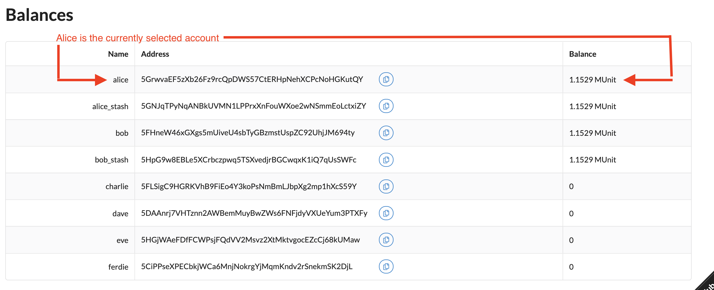

Build a local blockchain
As you learned in Blockchain basics, a blockchain consists of decentralized computerscalled nodesto form a network.
Substrate provides a flexible, open, and extensible development environment that allows you to design and build fully-customized blockchain nodes to suit your application or business model needs.
Get started
The first step in becoming a blockchain developer is to learn how to compile and launch a single local blockchain node. In this tutorial, you build and start a single node blockchain using a node template.
The Substrate node template provides a working single-node blockchain that you can run locally in your development environment. The node template includes several predefined componentssuch as user accounts and account balancesso that you can experiment with performing common tasks. Without making any changes to the template, you can run a functional node that produces blocks and allows transactions.
After you start the local blockchain node, this tutorial illustrates how you can use a Substrate front-end template to view information about blockchain activity and submit a transaction.
Who is this tutorial for?
This tutorial provides a basic introduction to Substrate and prepares a minimal working development environment that you can use to explore further in additional tutorials. It is intended for anyone interested in learning about Substrate and blockchain development. The tutorial assumes you have no prior experience or knowledge of Substrate. You don't need any programming or blockchain experience to complete this tutorial. This is just the first step, but hopefully, it inspires you to continue your journey.
How much time do you need to complete this tutorial?
This tutorial requires compiling Rust code and takes approximately one to two hours to complete.
Before you begin
For this tutorial, you download and use working code. Before you begin, verify the following:
-
You have good internet connection and access to a shell terminal on your local computer.
-
You are generally familiar with software development and use command-line interfaces.
-
You are generally familiar with blockchains and smart contract platforms.
Tutorial objectives
By completing this tutorial, you will accomplish the following objectives:
-
Set up a Substrate development environment on your computer.
-
Install the node template to start a Substrate-based blockchain.
-
Install a front-end template to interact with the local blockchain node.
-
Use the front-end template to submit a transaction and view the result.
Install required packages
Substrate development is easiest on UNIX-based operating systems like macOS or Linux. If you are using Microsoft Windows, refer to the Windows installation page.
To install required packages on macOS or Linux:
-
Open a terminal shell on your computer.
-
Locate your operating system in the following table and run the appropriate commands for your development environment.
| OS | Installation commands |
|---|---|
| Ubuntu or Debian | sudo apt update && sudo apt install -y git clang curl libssl-dev llvm libudev-dev |
| Arch Linux | pacman -Syu --needed --noconfirm curl git clang |
| Fedora | sudo dnf update sudo dnf install clang curl git openssl-devel |
| OpenSUSE | sudo zypper install clang curl git openssl-devel llvm-devel libudev-devel |
| macOS | brew update && brew install openssl |
| Windows | Refer to this installation guide. |
If you are using macOS and do not have Homebrew installed, run the following command to install Homebrew:
/bin/bash -c "$(curl -fsSL https://raw.githubusercontent.com/Homebrew/install/master/install.sh)"
After installing Homebrew, run brew install openssl.
Install Rust and the Rust toolchain
To install and configure Rust manually:
- Install
rustupby running the following command:
bash
curl https://sh.rustup.rs -sSf | sh
- Configure your current shell to reload your PATH environment variable so that it includes the Cargo
bindirectory by running the following command:
bash
source ~/.cargo/env
- Configure the Rust toolchain to default to the latest
stableversion by running the following commands:
bash
rustup default stable
rustup update
- Add the
nightlyrelease and thenightlyWebAssembly (wasm) targets by running the following commands:
bash
rustup update nightly
rustup target add wasm32-unknown-unknown --toolchain nightly
- Verify your installation by running the following commands:
bash
rustc --version
rustup show
The previous steps walked you through the installation and configuration of Rust and the Rust toolchain so that you could see the full process for yourself.
It is also possible to automate the steps using a script.
If you want to try installing and configuring Rust using a script, see the getsubstrate automation script.
Set up a development environment
After you install the required packages and the Rust compiler and toolchain, you are ready to set up a development environment on your local computer. You could build a development environment manually using the tools of your choice, but the Substrate Developer Hub has templates to get you started. After you set up the development environment, you can use it in subsequent tutorials as you learn more about building on Substrate.
Prepare a Substrate node
The Substrate node template provides a working development environment so that you can start building on Substrate right away.
To compile the Substrate node template:
- Clone the node template repository using the version
latestbranch by running the following command:
bash
git clone https://github.com/substrate-developer-hub/substrate-node-template
- Change to the root of the node template directory by running the following command:
bash
cd substrate-node-template
- Compile the node template by running the following command:
bash
cargo build --release
You should always use the --release flag to build optimized artifacts.
Install the front-end template
The front-end template uses ReactJS to render a web browser interface that enables you to interact with the Substrate-based blockchain node. You can use this Front-end template as a starting point for creating user interfaces for your own projects in future.
The front-end template requires Yarn and Node.js. If you don't have these tools, install them first.
To install the front-end template:
- Check whether
nodeis installed on your local computer by running the following command:
bash
node --version
If the command doesnt return a version number, download and install node by following the
instructions for the operating system you use on the Node.js website.
The node version should be at least v14 to run the front-end template.
- Check whether
yarnis installed on your local computer by running the following command:
bash
yarn --version
The yarn version should be at least v3 to run the front-end template.
If the command doesnt return a version number, download and install yarn by running the following command:
bash
npm install -g yarn
- Clone the front-end template repository by running the following command:
bash
git clone https://github.com/substrate-developer-hub/substrate-front-end-template
- Change to the root of the front-end template directory by running the following command:
bash
cd substrate-front-end-template
- Install the dependencies for the front-end template by running the following command:
bash
yarn install
Start the local node
After your node compiles, you are ready to start exploring what it does using the front-end template.
To start the local Substrate node:
-
Open a terminal shell.
-
Change to the root directory where you compiled the Substrate node template.
-
Start the node in development mode by running the following command:
bash
./target/release/node-template --dev
The node-template command-line options specify how you want the running node to operate.
In this case, the --dev option specifies that the node runs in developer mode using the predefined development chain specification.
By default, this option also deletes all active datasuch as keys, the blockchain database, and networking information when you stop the node by pressing Control-c.
Using the --dev option ensures that you have a clean working state any time you stop and restart the node.
- Verify your node is up and running successfully by reviewing the output displayed in the terminal.
The terminal should display output similar to this:
bash
2021-11-24 15:36:35 Running in --dev mode, RPC CORS has been disabled.
2021-11-24 15:36:35 Substrate Node
2021-11-24 15:36:35 version 4.0.0-dev-82b7c2c-aarch64-macos
2021-11-24 15:36:35 by Substrate DevHub <https://github.com/substrate-developer-hub>, 2017-2021
2021-11-24 15:36:35 Chain specification: Development
2021-11-24 15:36:35 Node name: six-wash-9274
2021-11-24 15:36:35 Role: AUTHORITY
2021-11-24 15:36:35 Database: RocksDb at /tmp/substrateP1jD7H/chains/dev/db
2021-11-24 15:36:35 Native runtime: node-template-100 (node-template-1.tx1.au1)
2021-11-24 15:36:35 Initializing Genesis block/state (state: 0xa59b5331, header-hash: 0xc5d237f3)
2021-11-24 15:36:35 Loading GRANDPA authority set from genesis on what appears to be first startup.
2021-11-24 15:36:35 Loaded block-time = 6s from block 0xc5d2fdad35e14684753f087c1a20f022274e154d39add4f7efe34e95476a37f3
2021-11-24 15:36:35 Using default protocol ID "sup" because none is configured in the chain specs
2021-11-24 15:36:35 Local node identity is: 12D3KooWG5niQF5bjsFao3D8DZRpUUB6uWZC2pK8hCDZ94zsr8Sc
2021-11-24 15:36:35 Highest known block at #0
...
...
...
2021-11-24 15:36:40 Idle (0 peers), best: #1 (0xd2b5d03f), finalized #0 (0xc5d237f3), 0 0
If the number after finalized is increasing, your blockchain is producing new blocks and reaching consensus about the state they describe.
We'll explore the details of the log output in a later tutorial. For now, it's only important to know that your node is running and producing blocks.
- Keep the terminal that displays the node output open to continue.
Start the front-end template
The Substrate front-end template consists of user interface components to enable you to interact with the Substrate node and perform a few common tasks.
To use the front-end template:
-
Open a new terminal shell on your computer, change to the root directory where you installed the front-end template.
-
Start the front-end template by running the following command:
bash
yarn start
- Open http://localhost:8000 in a browser to view the front-end template.
The top section has an Account selection list for selecting the account to work with when you want to perform on-chain operations. The top section of the template also displays information about the chain to which you're connected.

You might also notice that the front-end template displays a Balances table with some predefined accounts and that a few of those accounts are preconfigured with funds. You can use this sample data to try out operations like transferring funds.

Transfer funds from an account
Now that you have a blockchain node running on your local computer and you have a front-end template available for performing on-chain operations, you are ready to explore different ways to interact with the blockchain.
By default, the front-end template includes several components that allow you to try different common tasks. For this tutorial, you can perform a simple transfer operation that moves funds from one account to another.
To transfer funds to an account:
- In the Balances table, notice the predefined accountssuch as davethat have no funds associated with them.

Under the Balances table, the front-end template also displays a Transfer component. You use this component to transfer funds from one account to another.
-
Copy and paste the address for the dave account to specify the address to which you are transferring funds.
-
Specify at least 1000000000000 as the amount to transfer, then click Submit.
- Notice that the values in Balances table is updated with the transfer.
- Check the Events component to see events related to the transfer you just completed.
The Substrate blockchain reports the result of asynchronous operations as events, so you can use the Events components to see details about each operation performed as part of the transfer. For example:
- When the transaction has been completed and included in a block, you see a confirmation message similar to the following:
Finalized. Block hash: 0xda7e9e935abf5a3a2fdb0a27d67cd7a69e628165b5827255af2635ba226411a4
Stop the local node
After a successful transfer, you can continue to explore the front-end template components or stop the local Substrate node the state changes you made.
Because you specified the --dev option when you started the node, stopping the local node stops the blockchain and purges all persistent block data so that you can start with a clean state next time you start the node.
To stop the local Substrate node:
-
Return to the terminal shell where the node output is displayed.
-
Press Control-c to terminate the running process.
-
Verify your terminal returns to the terminal prompt in the
substrate-node-templatedirectory.
Next steps
Congratulations!
In this tutorial, you learned:
-
How to start a working Substrate-based blockchain node using the node.
-
How to view and interact with the blockchain node using a front-end user interface.
-
How to make a simple transfer from one account to another.
The front-end template includes several additional components for you to experiment with while you're connected to a local development node. You can explore these components on your own or learn more in the following topics:
If you experienced any issues with this tutorial or want to provide feedback:
-
Ask questions on Stack Overflow tagged substrate.
-
Contact the Substrate community on Element.